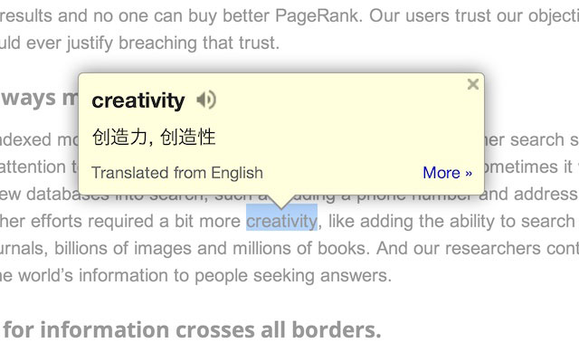
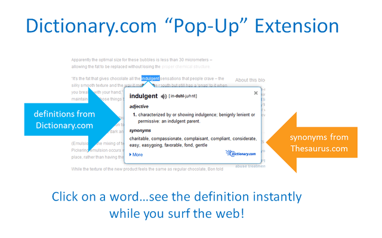
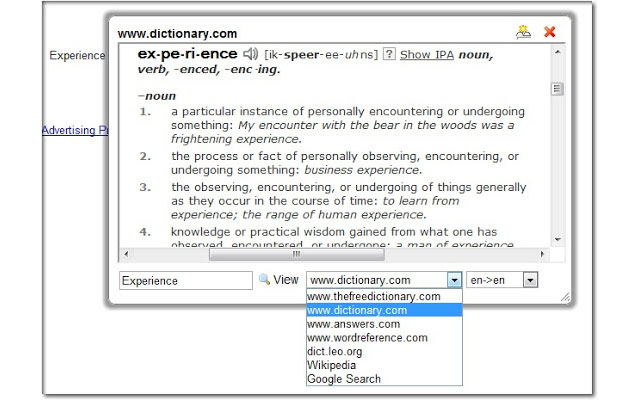
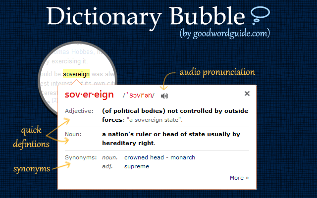
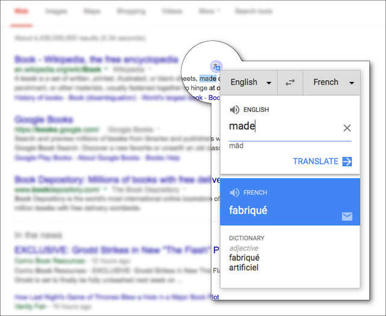
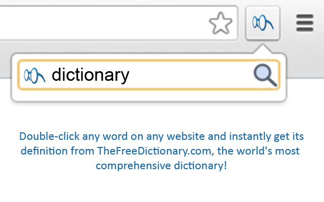

Browser Dictionaries
by Jim bagsh
Anglihel.com has a great feature that allows a reader to click on a word and hear it and at the bottom of every page are definitions for those words. But what about other website pages? How to know how to say those words and what do they mean?
Many browsers have dictionary extensions or plug-ins that give you a dictionary on every page. They can look up the word and give you more information, and audio. Below are some of the best dictionary browser extensions for Google Chrome, Firefox and Opera.
| Dictionary | Chrome | Firefox | Opera |
|---|---|---|---|
| Google Dictionary | |||
| Dictionary Pop-Up | |||
| Dictionary Tooltip | |||
| Instant Dictionary | |||
| Dictionary Anywhere | |||
| The Free Dictionary | |||
| Urban Dictionary |
Google Dictionary
The Google Dictionary opens the bubble shown in the picture below. This also works with foreign languages as a translation tool. You can click the Google Dictionary toolbar button to enter text into a dictionary search box instead. It can also save words that you look up. Click here to get the Google Dictionary for Chrome.

Dictionary Pop-Up
Dictionary.com is a Firefox add-on you can add to the browser (click here). You can double-click words in a page to open the definition bubble shown in the picture below and then click 'More' to open Dictionary.com.

Dictionary Tooltip
Dictionary Tooltip is another great Firefox dictionary add-on available here, and you can also add it to Chrome from here. Like Google Dictionary and Dictionary Pop-Up, you can double-click words on a page to look them up; or you can also select the text and press Ctrl + Shift + K to open the window directly below. It allows you to look up words with multiple dictionaries by clicking 'Show Dictionaries' and then selecting alternatives from the drop-down menu.

GoodWordGuide.com: Instant Dictionary
This is a Google Chrome dictionary extension integrated with GoodWordGuide.com from here. You can look up words by double-clicking them on the page much the same as the others. However, you can also select the text and then press the D button to automatically enter a word in the extension’s search box.

Dictionary Anywhere
Dictionary Anywhere is available for Firefox and Opera. To find the meaning of a word, just double click on the word and click on the icon on the browser toolbar. It displays meaning of the word along with some options like translate, share via email, pronunciation, synonyms and more. Sharing the word to a social media is also possible with this extension. Get it here for Firefox and here for Opera.

The Free Dictionary
The Free Dictionary is available for Firefox and Chrome browsers. It is also available for Windows, iOS and Android mobiles. This is one of the best dictionary extensions as finding the words is very easy. Just double-click on the word for which you want the meaning and it takes you to The Free Dictionary Website. You can even select the word and click on the browser extension to find the meaning. It provides you the pronunciation and can find the synonyms of the selected word. Get it here.
